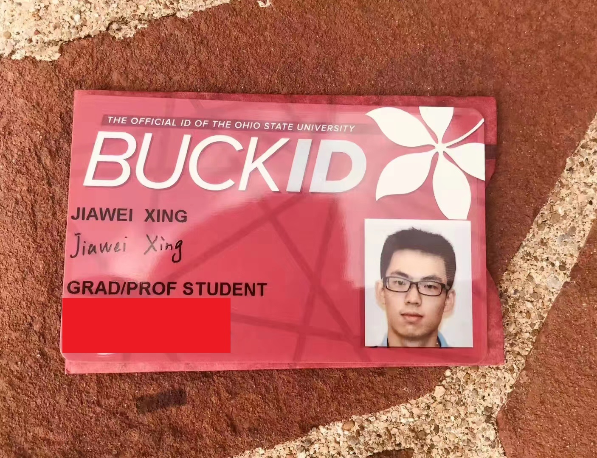
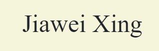
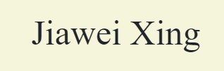

About Me

Hello, I'm Jiawei Xing, a computational biologist. I'm currently a postdoc in the Siepel lab at Cold Spring Harbor Laboratory. Before that, I received my PhD degree from the Jouline lab at The Ohio State University. I also received my BS degree from Beijing Normal University. My research interests are computational and evolutionary biology.
Education Background
2019 - 2023: The Ohio State University. PhD, Microbiology
2015 - 2019: Beijing Normal University. BS, Biological Sciences
Research Experiences
2021.1 - 2023.12: Graduate research assistant at The Ohio State University
- Advisor: Dr. Igor Jouline
- Understanding protein structures and evolution using phylogenetic analyses, biological networks, clustering algorithms, and hidden Markov models
- Studying ligand-protein interactions using molecular docking and virtual ligand screening
- Developing computational tools for bioinformatic analysis
2018.11 - 2019.4: Undergraduate thesis at Institute of Microbiology, Chinese Academy of Sciences
- Advisor: Dr. Guanghua Huang
- Discovery of novel drugs for fungal pathogen Candida auris
2018.7 - 2018.10: Undergraduate summer intern at IMCB (Institute of Molecular and Cell Biology), A*STAR (Agency for Science, Technology and Research), Singapore
- Advisor: Dr. Yue Wang
- Genome-wide screening of drug resistance genes in Candida albicans
2017.3 - 2018.6: Undergraduate project at Beijing Normal University
- Advisor: Dr. Wanjie Li
- Studied heat-shock protein 82 (Hsp82) and replicative life span in Saccharomyces cerevisiae
- Developed a Mother Enrichment Program (MEP) using toxin-antitoxin systems
2017.3 - 2017.11: BNU-China team for 2017 iGEM (International Genetically Engineered Machine)
- Advisor: Dr. Dong Yang, Dr. Xudong Zhu
- Novel surface display systems on Saccharomyces cerevisiae
Teaching Experience
2019.8 - 2020.12: Graduate teaching assistant at The Ohio State University
- Professor: Dr. Mette Ibba
- Labs for Basic and Practical Microbiology
Posters and Presentations
- Bacterial Locomotion and Signal Transduction (BLAST) Conference. Charleston, SC. Jan 2023
- OSU Microbiology Department Annual Symposium. Columbus, OH. Dec 2022
- Sensory Transduction in Microorganisms Conference GRC. Ventura, CA. Sep 2022
- Bacterial Locomotion and Signal Transduction (BLAST) Conference. Online. Jan 2021
- Beijing Normal University Bio-Liyun Annual Symposium. Beijing, China. Mar 2018
- International Genetically Engineered Machine (iGEM) Competition. Boston, MA. Nov 2017
Skills
- Bioinformatics: multiple sequence alignment, sequence similarity networks, clustering algorithms, phylogenetic trees, protein structure, molecular docking, virtual ligand screening, hidden Markov models
- Programming languages: Python, C, R, Bash, JavaScript, SQL, MATLAB, Octave
- Web development: Flask, Django, HTML, CSS, JavaScript, SQL, API
- Machine learning: linear regression, logistic regression, neural networks, SVM, clustering, PCA
Certificates and Awards


 
